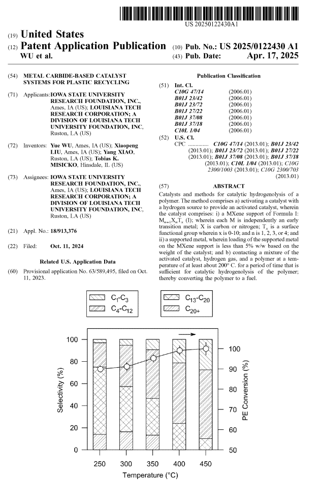
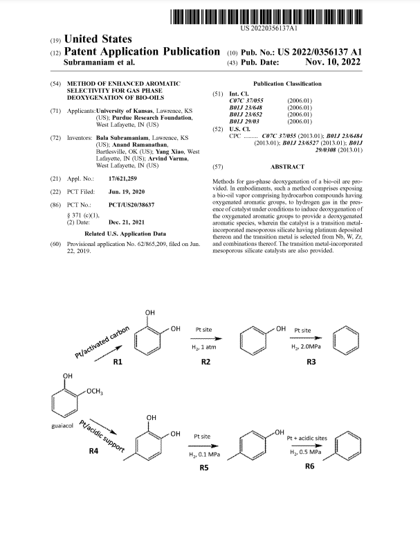

Please check out Dr. Yang Xiao's profile at Purdue University's Office of Technology Commercialization and his patents filed by Purdue Research Foundation. here.
5. Yang Xiao, Tobias K. Misicko, Joaquin Herrero, Jacob C. Robinson, and Daniela S. Mainardi, Generalized Criterion for Quantification of Chemical Reactor Runaway Risk, Provisional Patent, January 10, 2026.
4. Yang Xiao, Tobias K. Misicko, and Joaquin Herrero, Tunable Acidity of Pt/M KIT-6 Catalysts for the Purpose of Enhancing Hydrogenolysis of Glycerol to 1,3-Propanediol and Other Products, Provisional Patent, February 5, 2026.
3. Yang Xiao, Yue Wu, Xiaopeng Liu, and Joaquin Herrero, Highly Selective Hydrogenation of Carbon Dioxide to Ethanol, Provisional Patent, August 20, 2025.
2. Yang Xiao, Tobias K. Misicko, Xiaopeng Liu, and Yue Wu, Metal Carbide-based Catalyst Systems for Plastic Recycling, Patent Application 18/913,376, October 11, 2024. PDF | Link
1. Yang Xiao, Arvind Varma, Anand Ramanathan, and Bala Subramaniam, Method of Enhanced Aromatic Products from Bio-oil Upgrading, Patent Application US20220356137A1, June 22, 2019. PDF | Link

